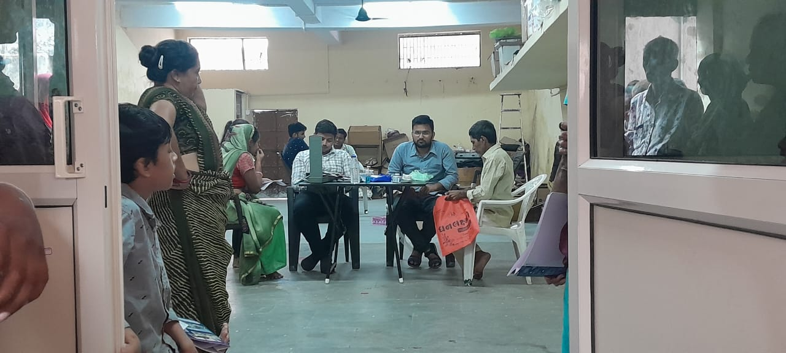

Naroda OPD centre · December 2023 archiveHealth & Medical
Weekly medical OPDs
13 weekly sessions supported access to consultations and essential healthcare.
1,014OPD attendances
Explore programme →Naroda brings family-centred programmes into the eastern industrial communities of Ahmedabad, connecting learning, healthcare, skilling and livelihoods.
Discover activities ↓July–September 2026 · Q2 FY 26–27 · Centre report figures; activity engagements are not unique beneficiaries.

Naroda OPD centre · December 2023 archive13 weekly sessions supported access to consultations and essential healthcare.
 Naroda skilling graduation event · Q2 report archive
Naroda skilling graduation event · Q2 report archive Tailoring, beauty therapy, data entry and GST with Tally learners demonstrated practical skills during Competition 10.0.
 Naroda Bal Sashakt art activity · Q2 report archive
Naroda Bal Sashakt art activity · Q2 report archive Creative writing, painting, mathematics and performances offered varied ways to learn.
 Naroda Science City excursion · Q2 report archive
Naroda Science City excursion · Q2 report archive Children explored exhibits and interactive learning at Ahmedabad Science City.
Practical STEM learning in four schools encourages exploration and experimentation.
The 18 July 2026 camp offered oral health screening and preventive guidance.
Salon practice and studio production create opportunities to use vocational skills. Studio income periods require reconciliation.
Financial awareness sessions reached school students, families and skilling participants; 294 services were completed.
Technical pathways include AutoCAD training, two-wheeler skills and electric vehicle fundamentals at partner institutes.
Activity photographs are from the original centre and report archives; archival dates are stated where known. Illustrative icons are used where a matching photograph has not yet been selected.